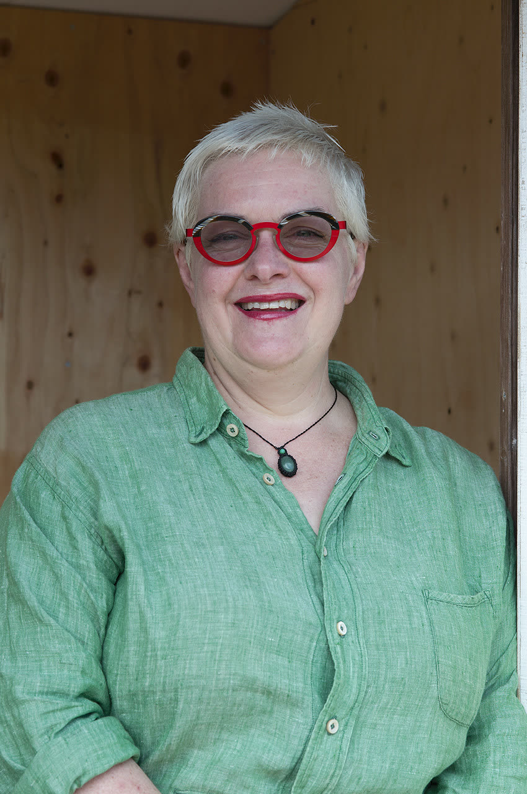

Global TRE™ Certifying Trainer & Certified TRE™ Provider
Accredited as a Global TRE™ Certifying Trainer and Certified Provider under Dr. David Berceli’s methodology — the highest level of TRE™ qualification worldwide.
· Senior Executive Coach (PCC) · Resilience Coach · Mindfulness Teacher · Somatic Coach · Somatic Bodyworker · Global TRE™ Certifying Trainer · Global TRE™ Provider · Breathwork Facilitator · Reiki & Core Shamanism Healer ·

Isabelle spent over 30 years as a Senior HR Business Partner and Talent Management leader in Fortune 100 companies across 9 countries. She built careers, supported leaders, and achieved everything the corporate system rewards. She also went through her own hardship — the quiet damage that toxic work environments and toxic people can cause.
She healed herself through somatic practices, TRE™, mindfulness and deep personal work. That firsthand journey is what brought her here. She doesn’t approach this work as someone standing above you with a set of techniques. She approaches it as someone who has walked through it, who continues to do her own inner work, and who now walks alongside others as they find their way back: to themselves, their bodies and their aliveness.
Accredited as a Global TRE™ Certifying Trainer and Certified Provider under Dr. David Berceli’s methodology — the highest level of TRE™ qualification worldwide.
Certified Leadership Coach since 2012, supporting C-suite executives, senior leaders and high-potential professionals across Europe, the US, Asia and beyond.
Trained in Strozzi Somatic Bodywork — a body-based methodology that uses gentle, systematic touch to help clients release historical patterns and contractions.
Certified Accredited Usui/Holy Fire III Reiki healer (lineage of William Lee Rand). Furthering her practice towards Reiki Master and Karuna Reiki — bringing deep energetic healing into her work.
Continuously studying coaching, resilience, somatic and energetic healing modalities. Isabelle is passionate and dedicated to her own development so she can best serve her clients and ensure her practice reflects the latest developments. She is currently studying under recognised teachers specialising in transformational coaching, breathwork, somatic practices, energetic healing, core shamanism and trauma-informed techniques.
30 years in senior HR roles at Fortune 100 companies across US, Europe, Asia, Russia and Japan — giving her unique insight into the challenges of corporate high performance.
Extensive experience in global, European, US and Asian leadership contexts. Has lived in 9 countries and collaborated with colleagues representing 40+ nationalities.
Isabelle has lived and worked across an extraordinary range of cultures — including the United States, France, Russia, Japan, Singapore and multiple other countries in Asia and Europe.
This depth of cross-cultural exposure has shaped her ability to connect with clients from all walks of life — adapting her language, approach and style to whatever serves the individual in front of her.
She has collaborated with colleagues and clients representing 40+ nationalities across diverse religious, gender and age backgrounds. Her somatic practice is built on this foundation of genuine cultural respect and curiosity.

My corporate career gave me every achievement the system rewards — and I also went through my own hardship. The damage a toxic work environment can cause is real. Healing myself through somatic practices is what brought me here. Now I support others to walk through and out of those environments, and to find themselves back: empowered, respected, and as healthy — mentally and physically — as possible.
— Isabelle Claus Teixeira
Each path is designed to meet you where you are.
Learn Tension & Trauma Release Exercises in supervised 1:1 sessions. After 3–4 sessions, practice independently as a lifelong self-regulation tool.
Learn About TRE™ →Somatic, trauma and neuroscience informed coaching — a 6–12 session journey that builds embodied intelligence for greater resilience, reduced stress and deeper self-awareness.
Explore Coaching →A 6 or 8-session personalised journey to bring mindfulness and neuroscience-backed practices into your daily life — creating space for more presence, ease and aliveness.
Explore Mindfulness →